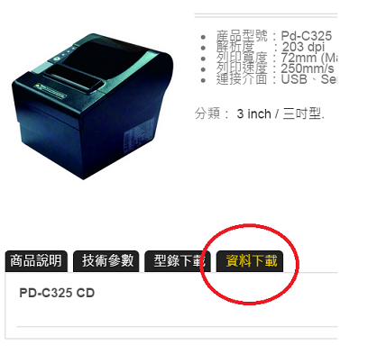
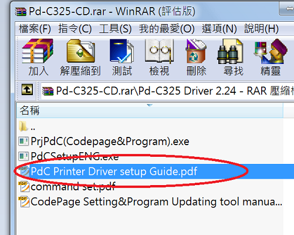
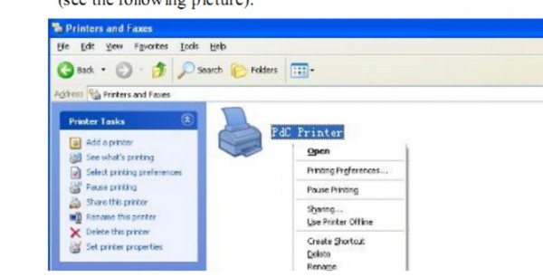
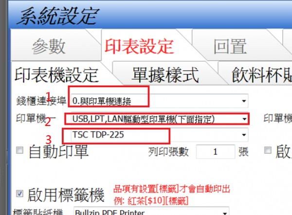

出單機為prowill Pd-C325 , 輸入介面為rs232及usb, 我是接rs232, 錢櫃的RJ-11 也插在這台, POS的設定值選"與印單機連接" , 印單機選COM1, 因前一套POS也是插在COM1可用, 但現在的問題是印出來的是亂碼, 錢櫃沒有反應, 是我還有什麼地方沒有設定好?
參考了不少家的POS軟體...
1 個回答
您好
接USB或RS232都是可以的 但您必須安裝該台印單機的驅動程式
請在您的電腦裝上PD-c325的驅動程式 (在您提供的網址下載)

依照壓縮檔中提供的PDF說明安裝驅動程式

安裝成功後 應該會在控制台 印表機 中出現該印表機
印單機與一般印表機無異 此時用一般文書軟體也可印出

確認印單機可正常印出後
請在先用的印表設定中 設置

第三項 就是選擇您在控制台->印表機 所新增的印表機名稱
(您的印表機名稱應該是 Pdc Printer)
此時應可正常列印 及打開錢箱
這台印單機也有先用的其他用戶在使用 依照PDF的說明做應可順利安裝
安裝過程如有任何問題 歡迎提問 站長會盡力解答